Starting a data project
Management, data, compute — and the command line
2026-10-01
Forewords
Technical skills for the Policy-in-Action project
- You: carrying out a collaborative data project
- Me: research engineer / data scientist at CREST, helping on data & code
- emilien.schultz@ensae.fr — office 4044
Today’s rule
Everything we do has to survive the loss of your computer.
Two sessions
- Session 1 (01/10/2026): managing a data project, Onyxia, the command line, general discussion on best practices
- Session 2 (21/10/2026): collaborating on code with Git & GitHub, running a computation on a remote server
- Group support for projects (zoom / office)
All information: https://github.com/emilienschultz/pia-dataproject-2026
Today
- Your experience — discussion
- From your laptop to the world
- The use case: Wikipedia
- Reproducibility
- Choosing tools
- Rules before starting
- Onyxia — hands on
- The command line — hands on: download the data
Your experience with data projects
- What is your background?
- What is the largest dataset you ever opened? With which software?
- What is the task you found the most difficult in a data project?
- Did you ever hit a limit: not enough memory, a script that runs for hours, a computer too old?
- Did you ever work with others on the same data or the same code? How did it go?
General workflow - today, first step
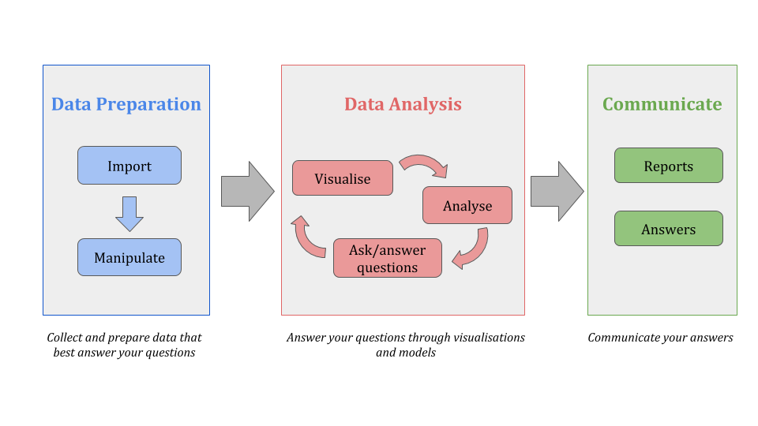
The unholy trinity
Every data project combines three things
- Data
- Code: scripts, notebooks, treatments
- Compute: the machine running the code
Each has its own tools and best practices. Most problems come from mixing them.
And now, also AI
Is it a fourth dimension?
- Models, workflows, tooling…
What does it change?
A lot of practices, but not the general philosophy or architecture we see today. And it makes reproducibility harder (which model? which version? which prompt?).
From your laptop to the world
Where could you run your code?
- Local computer
- limited resources, not collaborative, messy
- Institutional services (Onyxia datalab, Jean Zay, CREST server)
- conditions of access, availability
- but shared storage, big machines, GPUs
- Cloud services (Google Colab, Kaggle)
- proprietary, limited, black box
- Decidated servers
The comfort zone: your laptop
- One person, one machine, one folder
- Everything is visible, clickable, persistent
- It works… until:
- the dataset does not fit
- the script takes a night
- a teammate needs the same data and the same code
- your laptop dies the week before the deadline
What changes when you leave your laptop
- Nothing is persistent by default
- No mouse, no GUI: command line
- Resources are requested, shared, and (sometimes) paid
- Your credentials become the problem
- Everything has to be written down: scripts, not clicks
This is exactly what makes it reproducible.
The challenge of working together
- Sharing storage
- Communicating over various channels
- Agreeing on tools and conventions
- Keeping track of various versions
A set of best practices to avoid classic problems
New practices, new vocabulary, new colleagues
You will work with research engineers, data engineers, sysadmins of the datalab / HPC.
Knowing their words (pod, bucket, job, image, quota, token) opens collaborations.
Note
The rest of the session is about integrating a few of these practices and tools, with one running example.
Our use case: Wikipedia
Wikipedia as data
- The largest free encyclopedia: ~7M articles in English, ~2.7M in French, 300+ languages
- Text, links, categories, edit history, page views
- Used in social science: knowledge production, gender gaps, controversies, public attention, training data of LLMs
Note
For us today: a large, open, textual dataset that does not fit comfortably on a laptop.
Have a look at the dataset
Open the dataset card
- Where is the data physically?
- What is Hugging Face? Why is a model platform hosting datasets?
- What is the format? Could you open it with Excel?
- Which subset would you use for your project, and why?
The thread of the day
Get one shard of Wikipedia on a remote machine, with the command line, and store it where it survives the machine.
- Launch a service on Onyxia (compute)
- Download the data with the command line
- Have a first look at it
- Advanced: push it to S3 (storage)
Next session: the code goes to GitHub, and we run a real treatment.
Reproducibility
What is reproducibility
A result or a project is never a one shot.
A result is reproducible when the same analysis steps performed on the same dataset consistently produce the same answer.
…on another machine, by another person, later.
Science loves reproducibility
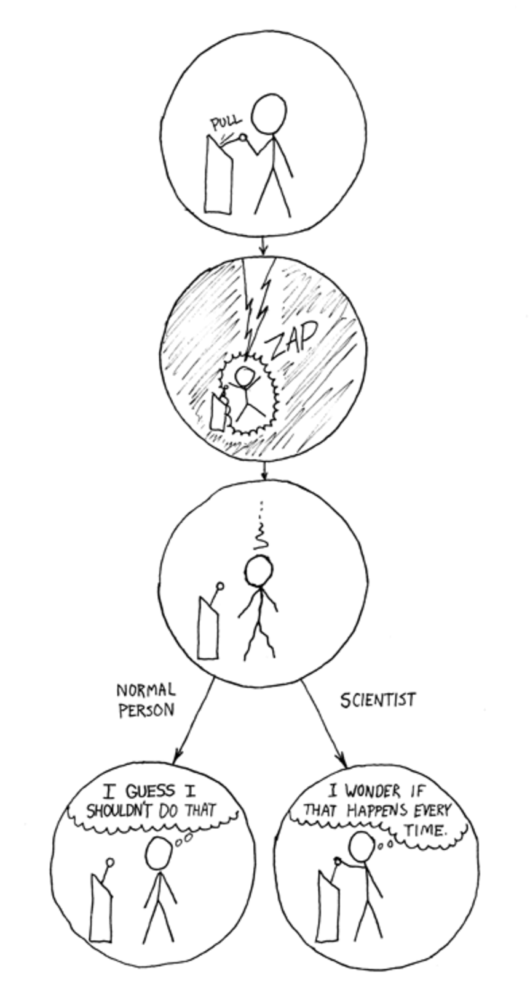
Different flavours of reproducibility
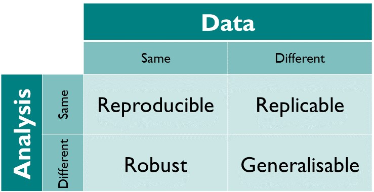
Why it matters for policy: an example
Reinhart & Rogoff (2010), Growth in a Time of Debt: above 90% of public debt/GDP, growth collapses. Widely cited in austerity debates.
Herndon, Ash & Pollin (2013) asked for the spreadsheet: an Excel formula excluded five countries, plus debatable weighting choices. The threshold effect largely disappears.
Important
It took 3 years and a PhD student to get the file. With open data + a script, it takes an afternoon.
Another example: our Wikipedia analysis
You count the articles mentioning “climate” in French Wikipedia. Six months later, a reviewer asks for the number again.
- Which dump? (Wikipedia changes every day)
- Which shards did you download? All of them?
- Which filter? Case sensitive? “climat” or “climatique”?
- Which version of your script? Of pandas?
- On which machine? Did the big shard even fit?
If any answer is “I don’t remember”, the number is not reproducible.
What it entails to be reproducible
Be able to walk the path again: connecting data, software and questions
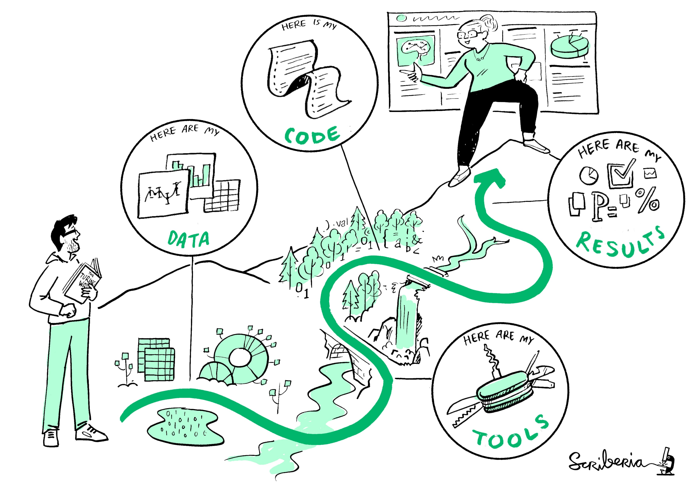
Openness
Both for data and code, openness creates the possibility of reproducibility
Not always possible for data, especially with sensitive information
What is open science
- Clear methodologies
- Data accessibility: FAIR (Findable, Accessible, Interoperable, Reusable)
- Reusable software (open code, open formats)
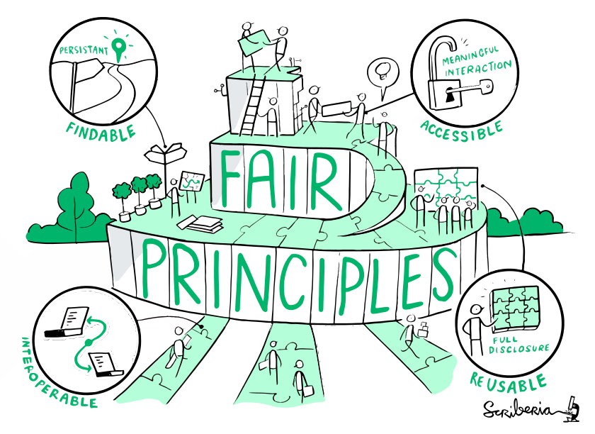
How to conciliate privacy with reproducibility
- As open as possible, as closed as necessary
- Anonymise / pseudonymise
- Aggregate
- Synthetic data
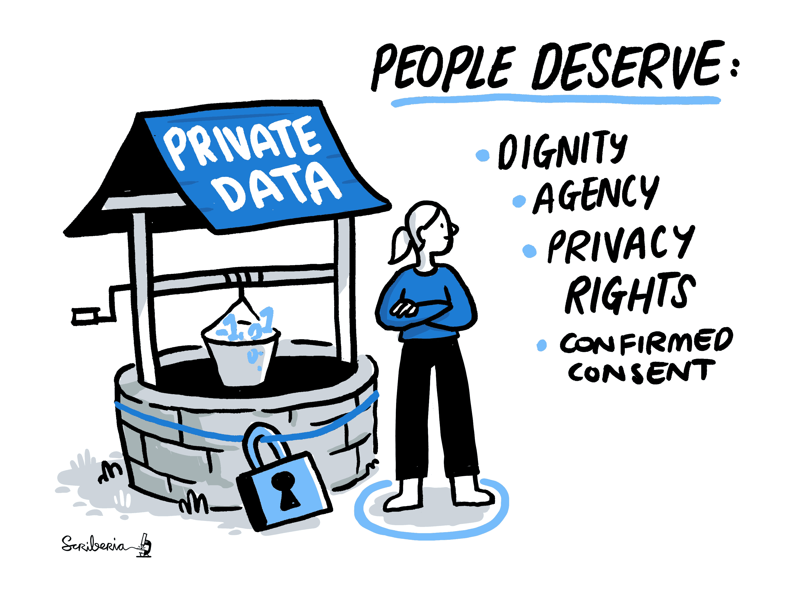
The DevOps connection
DevOps (software development + IT operations) = practices that connect code and its execution
- version control, automated tests, CI/CD
- containers, infrastructure as code
- logs, monitoring
MLOps = the same for data and models: data versioning, pipelines, experiment tracking. LLMOps, you guess…
What research borrows from it
A vocabulary that is invading computational practice
- Containers (Docker image): a frozen environment
- Pipelines: a Makefile /
run.sh/ snakemake with a clear order of steps - Logs: know what happened when you were not looking
- CI: GitHub Actions running tests on each change
Research workflows should be designed with recomputation in mind
The reproducibility ladder
| Level | What you have |
|---|---|
| 0 | a notebook on a laptop |
| 1 | script + README + Git |
| 2 | + pinned environment + data on shared storage |
| 3 | + container / CI |
| 4 | + workflow manager on HPC |
Target for your project: level 2. Today we set up the storage and the compute; next session the Git part.
How to achieve it: the minimal kit
- A Git repository with a
README.md: what, how to run, where the data is - A pinned environment:
requirements.txt(orpyproject.toml), Python version - Scripts, not only notebooks
- Data separated from code: raw data immutable, every transformation scripted
- Random seeds, logged parameters, dated outputs
Next session : code management
Choosing tools
Tools: who’s who, and what do you use?
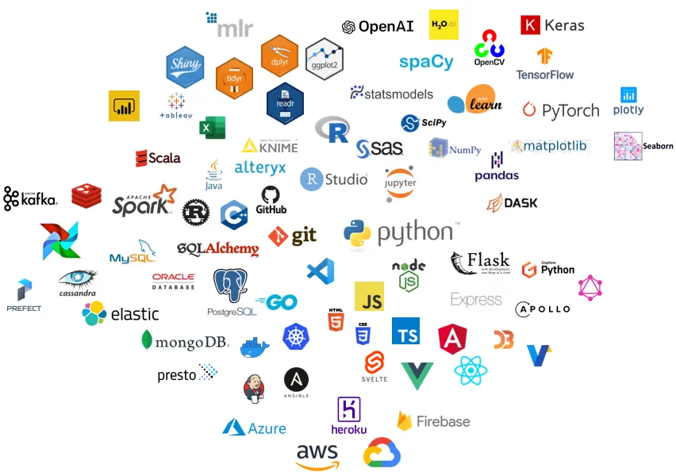
Software has consequences
- Open / proprietary
- Software / programming
- Specialised / general purpose
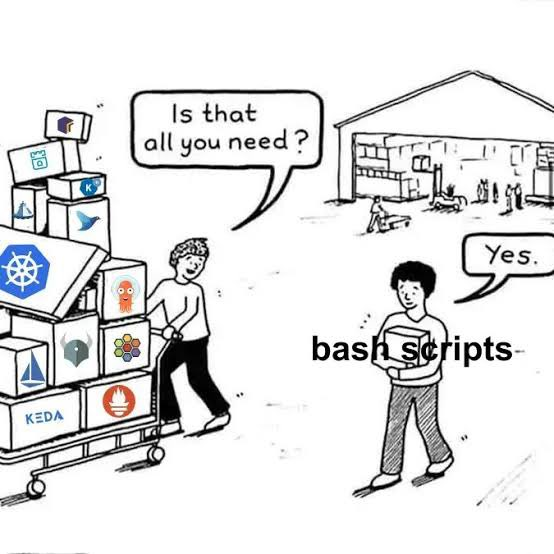
Explainability & maintainability
The idea is to increase stability and the possibility to modify elements
- Avoid dependencies on paid services and black boxes
- Use technologies you understand
- Use technologies used by others (your teammates, your field)
You can resist genAI (yes, it is hard)
Different uses, some more clever than others.
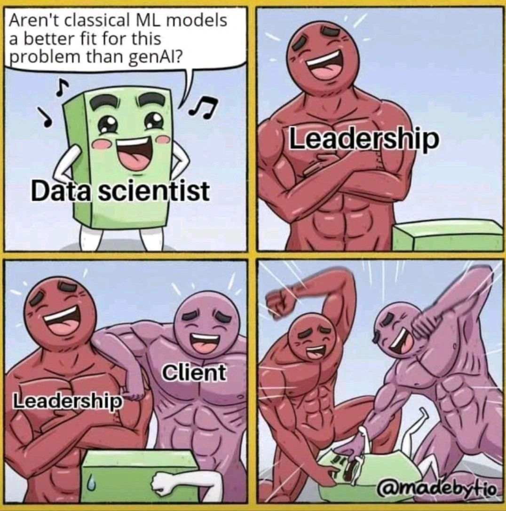
Tip
Good use: “explain this command”, “write the boilerplate”. Bad use: “here is my data, analyse it” (where does the data go? what did it do?).
The role of programming in data science
Important for the flexibility of the workflow
- Different languages (Python, R, SQL, bash…)
- Different tools
- Different workflows
What do you use for programming?
Scripts, notebooks and packages
- Notebooks allow literate programming
- very useful for exploration / prototyping
- Scripts are better for stability, automation, remote execution
- A pathway: notebook → script → package
Rule of thumb: if it runs more than once, it is a script.
Use adequate tools
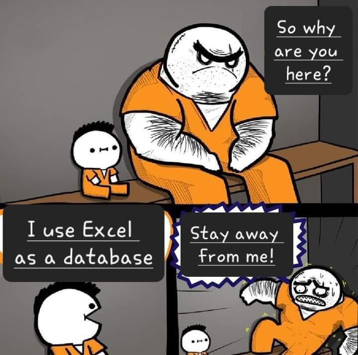
(in fact Excel-like tools are fine for specific uses)
Let’s talk about data formats
Format is both information & affordance
Formats: a practical map
| Format | Pros | Cons |
|---|---|---|
| CSV | universal, human-readable | no types, encoding & separators, slow, big |
| JSON / JSONL | nested, streams line by line | verbose |
| Parquet | typed, compressed, columnar, splittable | binary, needs a library |
| SQLite / DuckDB | relational, joins, SQL | one file, one writer |
Suggestion: open format + think about how you will access it.
What is a Parquet file (our Wikipedia format)
- Columnar: read only the columns you need (
titlewithouttext) - Typed schema embedded in the file
- Compressed (snappy, zstd): 3–10× smaller than CSV
- Split in row groups: read a slice without loading everything
- The format of data lakes, Hugging Face, Spark, DuckDB, polars…
On disk ≠ in memory
A 2 GB parquet of text can need 6–10 GB of RAM once loaded in pandas.
What kind of computation do you need?
| Resource | What it limits |
|---|---|
| CPU (cores) | speed, parallelism |
| RAM | the size of what you can hold: the true bottleneck for data |
| Disk | local = ephemeral & fast; object storage = persistent & shared |
| GPU | deep learning, embeddings, LLMs |
| Network | moving 17 GB is not free |
How to think about sizes
| Size | Example | Consequence |
|---|---|---|
| 1 MB | a survey | anything works |
| 100 MB | a year of admin data, one Simple English shard | Excel breaks, pandas is fine |
| 1 GB | several years of newspapers, one English shard | think about RAM |
| 10–100 GB | full English Wikipedia, a month of Reddit | stream or sample, remote machine |
| 1 TB+ | you need a data engineer |
Could you think of examples for each category in your own projects?
Rules of thumb
- RAM needed ≈ 3–10× the compressed parquet size (text)
- If it does not fit: stream (row groups, chunks, lazy engines) or sample
- Favour small data if you can
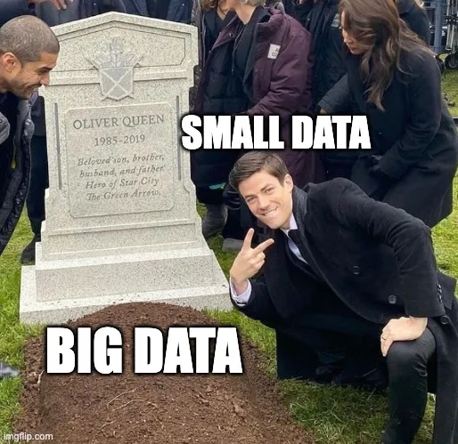
Otherwise
Solution 1: reduce your data
- work on a subset / sample
- read only the columns you need
- batch
Solution 2: parallelise
- more cores on one machine (polars, DuckDB, …)
- more machines (Dask, Spark, HPC jobs)
- dedicated tools: xan for CSV
Where to run: a decision tree
- Fits in your laptop RAM, runs in minutes → laptop
- Needs more RAM / a GPU / hours → Onyxia datalab
- Needs days, many GPUs, thousands of jobs → HPC (Jean Zay, GENCI)
Start small, then scale.
- One file, on a sample → does the code work?
- One file, full size → does it fit in memory? how long?
- All files, one machine → parallelise
- All files, many machines → HPC
Measure at each step: time, peak memory.
Rules before starting
Rule 0: know your data
- Have a look at your data
- duplicates, empty data, encoding
- Before starting complex treatments
- do simple treatments
- ask yourself if the question and the data match
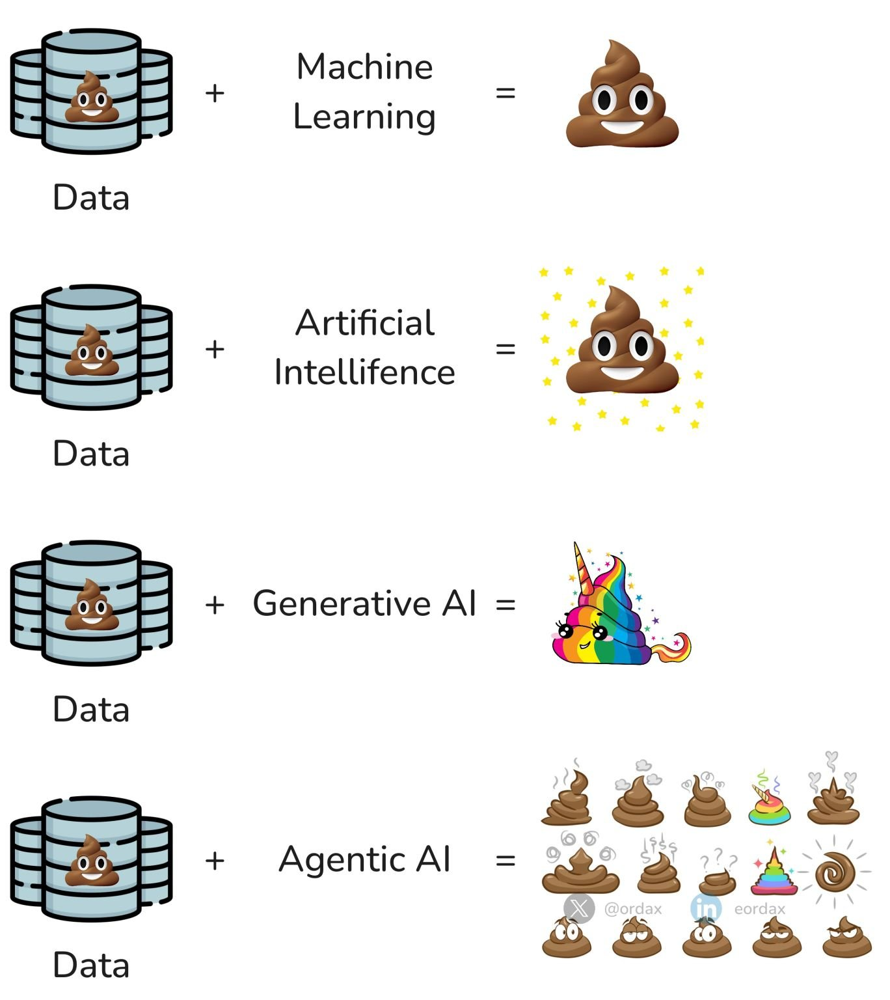
Rule 1: structure the project
- Separate code from data
- different logic, different tools, different sizes, different rights
- Document / comment your productions
- be explicit (variables, README)
- yes, it is boring, but useful
- Modularise: create distinct elements
- one file per step
- functions rather than repeated code
There will always be another Monday
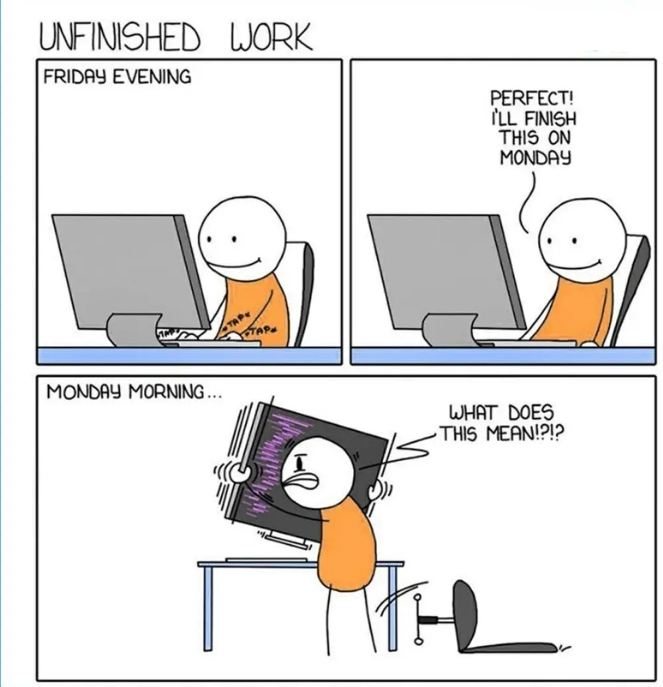
Rule 2: a common file system
project-name/
│
├── README.md # what, how to run, where is the data
├── requirements.txt # pinned environment
├── .gitignore # data/, .env, outputs
├── data/ # NOT in git
│ ├── README.md # -> where the data really is
│ ├── raw/ # original, immutable
│ ├── intermediate/
│ └── processed/ # analysis-ready
├── src/ # one script per step
├── notebooks/
├── docs/
└── reports/
├── figures/
└── tables/Rule 2 bis: paths are configuration, not code
The same script runs on your laptop, on Onyxia, on a teammate’s machine.
Rule 3: accept to spend time on data preparation
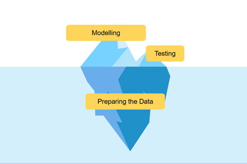
In theory / in reality
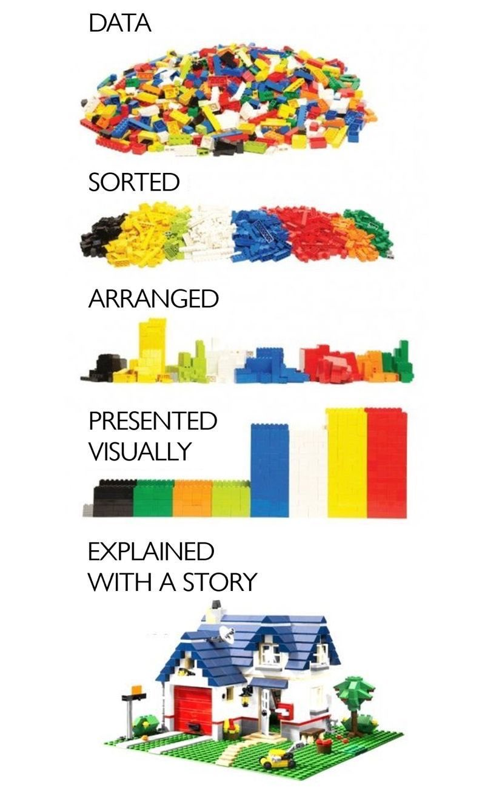
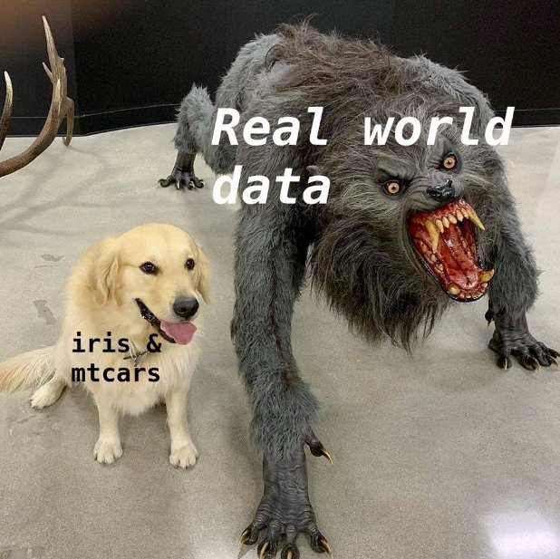
Avoid correcting your data manually
Build a workflow — write scripts. Raw data is immutable.
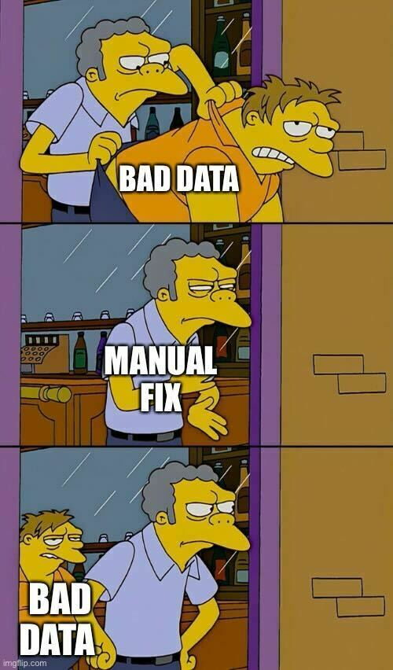
Data architecture: aim for tidy data
Take time to transform the data if needed
- Separate raw data from transformed data
- Move from unstructured to structured
- Tidy data: one observation per row, one variable per column

Rule 4: organise for collaboration
- Comments in the scripts; different files to modularise
- Git: one branch per person/feature, small commits, review (session 2)
- Log what you do (
printis a start,loggingis better) - Issues as the shared to-do list
- Conventions → written in the README
Where to store the data
During the project
- Laptop: temporary
- Institutional solutions: S3 on Onyxia
- Cloud solutions: with care (privacy)
After the project
- Zenodo, Figshare, Hugging Face datasets, data.gouv.fr
Ideally, a Data Management Plan
Data management plan: a document that lists the data and how you handle it
- What types of data? What formats?
- What volume?
- Where stored during? Where after?
- Who can access it? Privacy?
- Naming and versioning strategy?
Tip
For your project: half a page in data/README.md is enough.
Rule 5: never commit secrets
- S3 keys, Hugging Face tokens, GitHub tokens
- SSH private keys
.envfiles, config with passwords- Personal data
Use .gitignore + environment variables + a .env.example without values.
Tokens, passwords, keys
- Password: you, everywhere, forever → the worst
- Token: a service, a scope, an expiry → prefer read-only, short
- Key pair: a public half you share, a private half you never share
If you leak something: revoke first, then clean the history. Prevention is much cheaper.
Onyxia
What is Onyxia
- An open-source datalab platform developed by INSEE
- Instances:
- GENES: https://onyxia.lab.groupe-genes.fr
- INSEE SSPCloud: https://datalab.sspcloud.fr
- Three things behind one interface
- services launched by the users (Kubernetes)
- a file browser (S3 object storage)
- a secret browser (Vault)
A common entry for different services
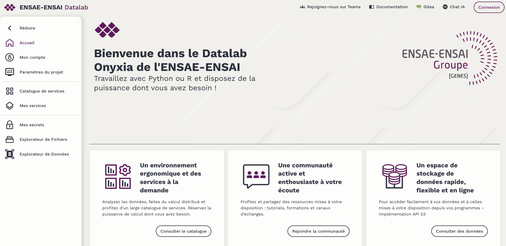
What is a service
- A container (Docker image: OS + Python + Jupyter / VS Code / RStudio…)
- running in a pod on a cluster
- with the resources you asked for (CPU, RAM, GPU, disk)
- ephemeral: when it stops, its local disk is gone
Important
The pod is compute, not storage.
How to launch one (live)
- Catalogue →
vscode-pythonorjupyter-python - Configure: resources, persistence, init script, Git, S3
- Launch → wait → open
- My services: see, delete, read the logs
Parameters that matter
- Resources: CPU request / limit, RAM request / limit, GPU
- Persistence: a volume (survives a restart of the service, not its deletion)
- Init script: install packages at start
- Git: a repository cloned at start, your name/email
- S3: credentials injected as environment variables
Tip
The Kubernetes tab shows the pod events. This is where OOMKilled appears.
What survives what
| Where | Service restarts | Service deleted | Datalab down |
|---|---|---|---|
| file on the pod | ✗ | ✗ | ✗ |
| persistent volume | ✓ | ✗ | ✗ |
| S3 bucket | ✓ | ✓ | ✓ (backup) |
| code on GitHub | ✓ | ✓ | ✓ |
This is today’s rule, stated as a table.
Note
A 32 GB pod left running for a week is not free. Kill your services.
Hands on 1: launch a service
Checklist
If you need a project group on Onyxia, send me a mail.
Discussion: which tool for which task?
- VS Code vs Jupyter Lab vs RStudio: what did you see? What is missing?
- Where would you write a notebook? A script? Where would you run a 3-hour job?
- Where is your data right now? What happens if you delete the service?
Important
Delete one of your two services. Check what is left.
The command line
Many servers have no window
- HPC clusters, the CREST server, most cloud machines: no GUI, only a terminal
- Onyxia gives you a GUI, but the important things (install, download, move data) happen in the terminal
- Every tool of the ecosystem (git, pip, hf, mc, docker…) is a command
Two philosophies
- GUI = Graphical User Interface
- mouse + everything visible
- “massive” software
- CLI = Command-Line Interface
- keyboard (text-based) + everything hidden
- one small tool per task
small, simple programs with clean interfaces can be combined to build larger systems
What is the command line interface?
A command-line interface (CLI) is a means of interacting with a computer program by inputting lines of text called command-lines
A shell / terminal is a process that serves as a command processor
- In the past, every computer
- Now, mainly Unix systems (Linux, macOS…) and programming
- Different shells (bash, zsh…) with a common philosophy
Why do I have to care about CLI?
- Formalise all treatments to allow reproducibility (a command can be copied; a click cannot)
- Use different types of remote computers (datalab, HPC)
- Mix it with scripts (Python, R)
- Use specific tools (git, hf, mc, xan…)
- Combine existing tools into powerful pipelines
*nux systems in research
Linux (and Unix)
- largely used in research
- infrastructure of computing resources (Linux runs all the TOP500 supercomputers)
- pervasive in a lot of tools
Beyond
- Free and open (nobody owns it)
- Diversity of versions: Debian (Ubuntu), Red Hat, SUSE…
- On Windows: Windows Subsystem for Linux
This is overly complicated!
You don’t have to master all of it
- You will use only specific commands
- You can search / ask an LLM
- And you can make different attempts: it is a dialogue
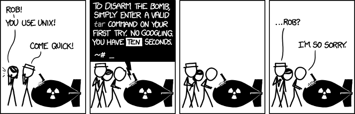
First, the structure of a command
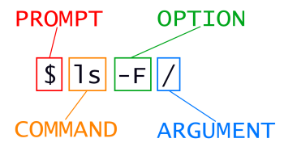
- a name for a tool (for instance
find) - options with a flag (
-o VALUE/--option VALUE) - arguments (potentially multiple)
Help is always in the same place
man command or command --help
Some examples
Second: files, directories, processes
- A file = a collection of data on non-volatile storage. It has a location in the file system called a path.
- A directory is a special file holding information about other files: a container for files or directories.
- A process is an executing program that needs volatile storage (RAM) and CPU.
Third: the file system
- Organised from a root:
/(Unix) orC:\(Windows) - The file system is a tree 🌲
- Absolute path: from the root. Depends on the computer.
- Relative path: from the current location. Each program is running from somewhere:
.
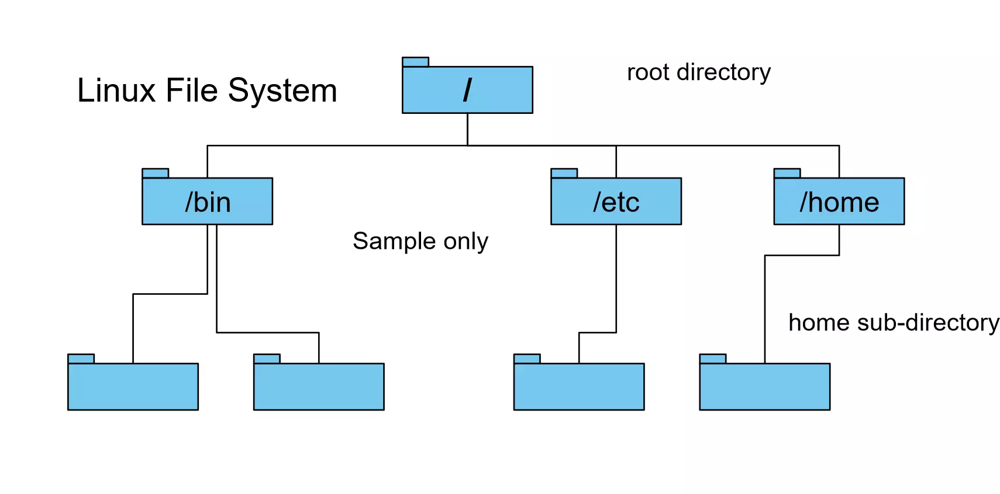
First commands
pwd: the current working directoryls: list the files in a folder (-llong,-hhuman sizes,-ahidden)cd: change directorymkdir: create a folder (-pfor nested)touch: create an empty filecp: copy a filemv: move / rename a filerm: remove a file (-rfor a directory; no trash bin)
Let’s have a quick look in the Onyxia terminal
Tips
Up/Downarrows: previous commandsTab: completion..: parent folder~: homehistory 20: the last 20 commands- Wildcard matching:
* Ctrl+C: stop what is running
Exercise 1: build the project skeleton
In the terminal of your Onyxia service:
Create this file system and go into raw
pia-project/
├── data/
│ ├── raw/
│ └── processed/
├── src/
└── README.mdThen
- List all files, including hidden ones
- Check where you are
- Go back to the root of the project in one command
Correction 1
Note
mkdir -p creates all the intermediate folders. ../.. = two levels up.
More useful commands
echo: print textcat: display a filehead/tail: the beginning / end of a file (-n 5)wc: count lines, words, bytes (-l)find: find filesgrep: search text (global / regular expression / print)sort,uniq: sort, deduplicatedu -sh *: disk usage of each filedf -h: free disk space
More (just to know they exist)
top/htop: see running processesps: list processes;kill: stop onenano/vim: edit text files in the terminalcurl/wget: download filesunzip,tar,gzip: (de)compresschmod: change permissionssudo: run as administrator
Successive commands: the pipe
- Redirect output to a file:
>(write) and>>(append) - Pipe the output of one command into the next:
|
Variables and environment variables
echo $HOME,echo $PATHenv: all the environment variables of the shellexport VAR=value: set a variable, visible by the programs you launchwhich python: where is this command?
On Onyxia
Your S3 credentials are environment variables: env | grep AWS
File permissions
Permissions are what a user can do with a file
ls -l: mode shown as read-write-execute (rwx) for user, group, otherschmod u+x script.sh: make a file executablechmod 600 key: readable only by you (what SSH wants for a private key)
Install a tool
- Each OS has a package manager:
apt-get(Debian),brew(macOS),choco(Windows) - Python tools come with
pip
Note
On Onyxia, installations disappear with the service. Put them in the init script or in requirements.txt.
Bash script: from commands to a file
A file with the extension .sh and lines of commands
A script is a reproducible click.
Hands on 2: get Wikipedia with the command line
In pia-project/, in the Onyxia terminal:
Download the Simple English shard (188 MB)
Direct URL: https://huggingface.co/datasets/omarkamali/wikipedia-monthly/resolve/main/20250703.simple/train-00001-of-00003.parquet
Put it in data/raw/
Check the file
Size in MB? How much disk is left? What type of file is it?
Look inside (Python one-liner)
Number of rows, columns, title of the first article
Write the commands in the README
Someone else should be able to redo it
Hands on 2 (advanced)
A. Same thing with the Hugging Face CLI
pip install huggingface_hub, then hf download ... --repo-type dataset --local-dir data/raw
B. Store it on S3 with mc
Copy the file to your bucket, list the bucket, delete the local file, get it back.
C. Bigger
Download 20250702.en/train_00016.parquet (576 MB). How long? Does it load in pandas with 4 GB of RAM?
D. Script it
Put the download in src/get_wiki.sh taking the subset and the shard as arguments.
Correction 2
cd pia-project
curl -L -o data/raw/wiki_simple_01.parquet \
"https://huggingface.co/datasets/omarkamali/wikipedia-monthly/resolve/main/20250703.simple/train-00001-of-00003.parquet"
ls -lh data/raw # 180M
df -h . # disk left on the pod
file data/raw/wiki_simple_01.parquet
python -c "import pandas as pd; df = pd.read_parquet('data/raw/wiki_simple_01.parquet'); print(df.shape); print(df.columns.tolist()); print(df['title'].iloc[0])"Note
-L follows the redirection (Hugging Face redirects to a CDN). -o names the output file.
Correction 2 (advanced)
# A. Hugging Face CLI
hf download omarkamali/wikipedia-monthly \
20250703.simple/train-00001-of-00003.parquet \
--repo-type dataset --local-dir data/raw
# B. S3 with the MinIO client
mc ls s3/
mc cp data/raw/wiki_simple_01.parquet s3/$USER/wiki/
mc ls s3/$USER/wiki/
rm data/raw/wiki_simple_01.parquet
mc cp s3/$USER/wiki/wiki_simple_01.parquet data/raw/Warning
Replace $USER by your bucket name (see My files). Tokens expire (≈ 24h): renew from My account → Connect to storage.
S3 from Python
import os
import pandas as pd
storage_options = {
"client_kwargs": {"endpoint_url": os.environ["AWS_S3_ENDPOINT"]},
"key": os.environ["AWS_ACCESS_KEY_ID"],
"secret": os.environ["AWS_SECRET_ACCESS_KEY"],
"token": os.environ["AWS_SESSION_TOKEN"],
}
df = pd.read_parquet("s3://my-bucket/wiki/wiki_simple_01.parquet",
columns=["id", "title"],
storage_options=storage_options)The same file, readable from any service, by any teammate with access to the bucket.
Wrap up
What we did today
| The unholy trinity | Today | Next session |
|---|---|---|
| Compute | an ephemeral service on Onyxia | a real treatment on a remote server |
| Data | one Wikipedia shard, downloaded with the CLI, stored on S3 | a built, downsized dataset |
| Code | a README and a bash script | Git, GitHub, collaboration |
Before next session
Delete your services. Check that your data is on S3 and your commands are in the README.
Resources
- The Turing Way — Guide for Reproducible Research
- Onyxia user guide
- Software Carpentry — The Unix Shell
- IDRIS cheat sheet (Jean Zay)
- Stoudt et al. (2024). Ten simple rules for building and maintaining a responsible data science workflow. PLOS Comp Bio
- Wickham (2014). Tidy data. JSS
- Herndon, Ash & Pollin (2014). Does high public debt consistently stifle economic growth? A critique of Reinhart and Rogoff. Cambridge J. of Economics
- UCSD — Data management best practices
Policy in Action 2026 — Session 1